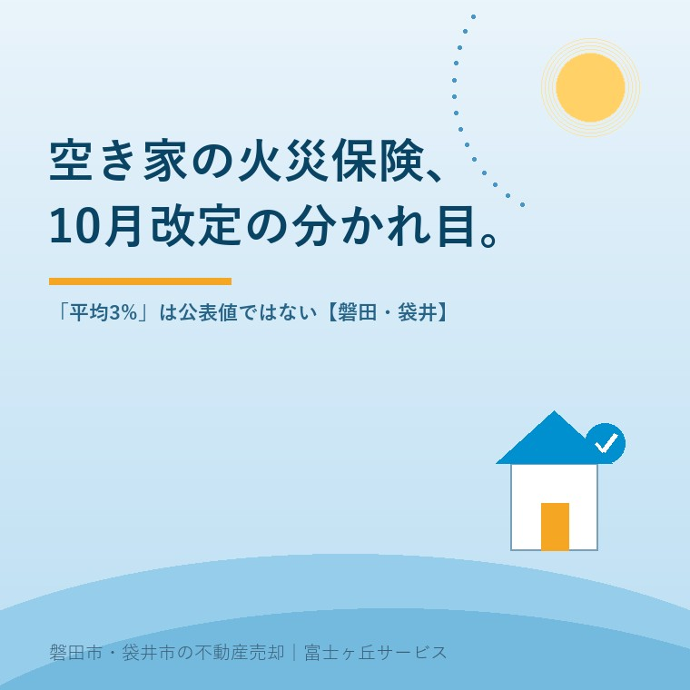

2026年8月31日｜カテゴリ：空き家／火災保険

この記事の要点
Q. 火災保険が10月に上がると聞きました。空き家の実家、今のうちに何かしたほうがいいですか。
A. 慌てて契約を動かす必要はありません。損保ジャパンの改定は「2026年10月1日以降に保険期間が始まる契約」からで、分かれ目は契約日ではなく始期です。9月中に始期が来ないなら今回は関係しません。先に確かめるのは満期日と、その家が住宅物件のままかどうかです。
磐田市・袋井市・森町では、介護施設の運営から不動産事業を始めた富士ヶ丘サービスのような「介護×不動産」専門の会社に相談するという選択肢があります。
「10月から火災保険が上がるらしいので、その前にどうにかできませんか」。空き家になった実家をお持ちの方なら、こう考えても不思議ではないと思います。値上げの前に動くべきだ、という発想は自然です。
ただ、結論から言うと、値上げそのものより先に確かめてほしいことが別にあります。この記事は2026年8月31日時点で、損害保険ジャパン株式会社が公開している改定案内と、損害保険料率算出機構および日本損害保険協会の公表資料を確認して書いています。空き家の保険が住宅用のままでは続かない理由は誰も住まなくなった実家の火災保険は、そのままでは続かないに詳しく書きました。
損害保険ジャパン株式会社は、個人向けの火災保険「ＴＨＥ すまいの保険」「ＴＨＥ 家財の保険」を2026年10月に改定します。同社の改定案内は、適用の範囲をこう書いています。
「2026年10月1日以降に保険期間が始まるご契約から、補償内容やお手続き方法などを変更します。」
損害保険ジャパン株式会社「2026年10月1日以降始期契約の火災保険の改定について」（資料作成2026年5月7日／2026年8月31日確認）
ここが実務では一番効きます。基準は契約日でも申込日でもなく、保険期間が始まる日、つまり始期です。2026年9月30日までに始期を迎えた契約は、その保険期間が終わるまで今回の改定を受けません。5年契約で2026年6月に更新したばかりなら、次に影響が出るのは2031年です。
同社が案内している改定項目は、保険料だけではありません。
| 改定項目 | 内容 |
|---|---|
| 保険料の改定 | 改定幅は契約内容・建築年月・構造により異なる（率の記載なし） |
| 自己負担額 | ラインナップに20万円を新設 |
| 安心更新サポート特約 | 1年契約は原則「自動継続型」を自動セット |
| 更新手続き | Webによる更新手続き方法を新設 |
| 付帯サービス | 電気設備・ガラス・建具・網戸のトラブル対応など4種を追加。「空き家相談サービス」を新設 |
損害保険ジャパン株式会社の改定案内PDF（管理番号SJI26-56064）より大石が整理（2026年8月31日確認）。
最後の行を見たとき、私は少し驚きました。大手損保が個人向け火災保険の付帯サービスに「空き家相談」を並べたということは、契約者の側に空き家を抱えた人がそれだけ増えている、と保険会社が判断したということです。値上げの話題に隠れていますが、私にはこちらのほうが業界の変化として大きく見えます。
この改定は「平均約3%の値上げ」として紹介されることが多くあります。私も最初はそう聞きました。ところが一次情報にあたると、様子が違いました。
損害保険ジャパン株式会社の改定案内PDFに、改定率は書かれていません。書かれているのは次の一文です。
「保険料の改定幅はご契約の内容や建物の建築年月、構造などによって異なりますので、更新後のご契約の保険料は、お見積書などをご確認ください。」
同社改定案内PDF（2026年8月31日確認）
同社の2026年度ニュースリリース一覧にも、この改定のリリースは掲載されていません。個人向け平均3%・企業向け1.2%という数字の出どころは、2026年5月28日配信の日本経済新聞の記事です。報道としては存在しますが、2026年8月31日時点で同社が公表した値としては確認できませんでした。
細かい話に見えるかもしれません。ただ、保険料の見込みを立てるときにこの差は効きます。「平均3%」を前提に年間保険料3万円の契約で計算すると値上がりは年900円、月75円です。ところが同社が言っているのは「建築年月と構造で変わる」であって、平均に寄る保証はどこにもありません。築50年の木造と築5年の耐火では、同じ改定でも動く額が違って当然です。いくら上がるかは、見積もりを取るまで私にも分かりません。この記事でお伝えできるのは、平均値を自分の家に当てはめるのは危ないということまでです。
改定理由については、同社が明示しています。
「近年、物価の上昇が著しく、社会環境が大きく変化しています。それに伴い、建築費も年々上昇しており、万が一の事故の際に建物や家財などを修理･再建･再取得するための費用も高くなる傾向にあります。」
同社改定案内PDF（2026年8月31日確認）
火災保険は、燃えた家を建て直す費用を担保するものです。建築費が上がれば、同じ家でも必要な保険金額が上がります。私の商売の側から見ても、この理屈は素直に通ります。
火災保険料の話には、もう一段上の仕組みがあります。損害保険料率算出機構が算出する「火災保険参考純率」です。各社はこれを参考に自社の保険料を決めますが、採用するかどうかも、いつ反映するかも各社の判断です。機構自身がこう書いています。
「当機構で行う改定内容を採用するか否かは各保険会社が判断します。……保険会社が自社の保険商品に参考純率を使用する場合においても、販売時期は保険会社が決定します。」
損害保険料率算出機構（2026年8月31日確認）
その参考純率の直近の改定は、2023年6月28日公表の全国平均＋13.0%引上げです。あわせて水災料率が地域のリスクに応じた5区分に細分化され、最高と最低の較差はおよそ1.2倍とされました。2026年8月31日時点で、これより新しい参考純率の改定は公表されていません。
| 時期 | できごと | 全国平均 |
|---|---|---|
| 2023年6月28日 | 火災保険参考純率の改定を公表（水災5区分化を含む） | ＋13.0% |
| 2026年10月1日始期〜 | 損保ジャパンの商品改定（参考純率改定の表示なし） | 非公表 |
損害保険料率算出機構および損害保険ジャパン株式会社の公表資料より大石が整理（2026年8月31日確認）。
同社の改定案内には過去の改定を並べた年表があり、参考純率の改定を反映した回には印が付いています。2026年10月の回にその印はありません。つまり今回は、機構の参考純率を受けた改定ではなく、同社の商品改定として行われるものです。2023年の＋13.0%と比べれば、報道されている3%は4分の1以下です。私は今回の改定を、慌てて何かを動かすほどの出来事だとは見ていません。
ここからが本題です。相続した実家に誰も住んでいない場合、心配すべきは3%かどうかではありません。そもそも今の火災保険を継続できるのかのほうです。
火災保険は建物の用途で分類されています。損害保険料率算出機構は、住宅物件を「住居としてのみ使用する建物です」と定義し、一般物件を「オフィスビルや学校など、住宅物件・工場物件・倉庫物件のいずれにも該当しないものです」としています。日本損害保険協会も、住居のみに使用している住宅物件と、事務所・病院・旅館などの一般物件を分け、それぞれに対応する商品を用意していると説明しています。
| 住宅物件 | 一般物件 | |
|---|---|---|
| 定義 | 住居としてのみ使用する建物 | 住宅・工場・倉庫のいずれにも当たらない建物 |
| 個人向け商品 | 加入できる | 個人用火災総合保険の対象外 |
| 地震保険 | 付けられる | 付けられない |
損害保険料率算出機構および日本損害保険協会の公表資料より大石が整理（2026年8月31日確認）。空き家がどちらに分類されるかは建物の状況と保険会社の判断によります。
地震保険については、日本損害保険協会が明確に書いています。保険の対象にできるのは「居住用建物（住居のみに使用される建物および併用住宅）および家財（生活用動産）」に限られ、店舗や事務所のみに使用されている建物は対象外です。誰も住んでいない家が一般物件と判断されれば、地震保険は付けられません。静岡県の家で地震の備えが外れるというのは、値上げどころの話ではないと私は思います。津波の想定区域については磐田市の津波災害警戒区域の記事にまとめました。
そして、この用途の変更は契約者側の通知義務にあたります。損保ジャパンの「ご契約のしおり」は、通知が必要な場合として「建物の構造または用途を変更するとき」を挙げています。黙っていれば見つからない、という性質のものではありません。事故が起きてから用途違いが判明すると、保険金の支払いで揉めます。
正直に書くと、住宅物件から一般物件へ切り替えたときに保険料がどれだけ動くかは、建物ごとに見積もりを取らないと分かりません。私は「何倍になる」と言えるだけの根拠を持っていません。ただ、商品そのものが変わる話と、同じ商品の料率が動く話では、前者のほうが影響は大きくなるはずだと考えています。順番として、まず用途、次に値上げです。
空き家の実家をお持ちの方に、この9月中にやっていただきたいことを3つに絞ります。役所も保険会社も、どこも混んでいない時期です。
磐田市と袋井市の事情を1つ添えます。令和5年住宅・土地統計調査による磐田市の空き家は7,840戸、うち一戸建ての「その他の住宅」が2,330戸で、市内31世帯に1戸ぶんにあたります（内訳は磐田市の人口・世帯数2026年7月の記事にまとめました）。この2,330戸すべてが適切な物件種別で保険に入っているとは、私にはとても思えません。台風が来る前の9月に、証券を1枚出す。それだけで足りる家が、この市内にかなりの数あるはずだと考えています。引渡し前に台風が来た場合の負担については引渡し前の危険負担の記事をご覧ください。
ふじがおか実家カルテ｜売ると決める前に、調べるほうを終わらせます
保険の前に、名義と建物の状況を1枚に。
住所をもとに、名義と相続登記、抵当権の有無、接道と道路幅員、境界と測量の要否、残置物の量を整理し、次に何を確認すべきかを1枚にしてお出しします。作成料0円・入力約1分。申込みだけで売却依頼にはなりません。
当社は保険代理店ではありません。保険を売ることはできませんし、どの商品が有利かの比較もしません。私たちがしているのは、相談を受けた家について「今どういう状態の建物なのか」を整理して、契約中の保険会社に何を伝えるべきかまで一緒に確認することです。
介護施設の運営から不動産に入った会社なので、ご相談の入口は親御さんの入所や看取りであることがほとんどです。入所の手続きと介護の段取りで手一杯のご家族に、保険まで気を回してくださいとは言いにくい。それでも、決めるまでのあいだも建物は建っていて、台風は来ます。だから売却の話より先に保険を尋ねる順番でよいと私は考えていて、今のうちに書いておくことにしました。
保険料の見積もりと契約可否は契約中の保険会社または代理店へ、地震保険の付帯可否は同じく保険会社へ、相続登記と名義の判断は司法書士へ、譲渡所得と控除の判断は税理士へご確認ください。当社は保険の募集を行っておりません。
損保ジャパンの案内では「2026年10月1日以降に保険期間が始まるご契約から」です。基準は契約日や申込日ではなく、保険期間の始まる日、つまり始期です。2026年9月30日までに始期を迎える契約は、その保険期間の間は今回の改定を受けません。5年契約なら次の満期まで持ち越しになります。ご自分の満期日は保険証券か更新案内で確認できます。他社の改定時期は各社で異なります。
損保ジャパンが公表した数字ではありません。同社の改定案内PDF（管理番号SJI26-56064、2026年5月7日作成）に改定率の記載はなく、「保険料の改定幅はご契約の内容や建物の建築年月、構造などによって異なります」と書かれているだけです。平均3%という数字は2026年5月28日の日本経済新聞の報道によるもので、2026年8月31日時点で同社の発表としては確認できていません。実際の額は見積書でご確認ください。
続けられるとは限りません。火災保険は建物の用途で分類され、損害保険料率算出機構は住宅物件を「住居としてのみ使用する建物」と定義しています。誰も住まなくなった家は一般物件として扱われることがあり、その場合は契約中の商品を継続できません。地震保険はさらに厳しく、日本損害保険協会は対象を居住用建物と家財に限ると明記しています。用途の変更は通知義務の対象なので、まず保険会社か代理店にご確認ください。

この記事を書いた人：大石浩之（宅地建物取引士）
磐田市・袋井市・森町で「介護×相続×空き家」に特化した不動産売却支援を行う富士ヶ丘サービスの代表取締役・宅地建物取引士。介護施設の運営から不動産事業を始めた経験をもとに、売主とご家族が困らない売却を一件ずつお手伝いしています。プロフィール
本記事は2026年8月31日時点で損害保険ジャパン株式会社、損害保険料率算出機構および日本損害保険協会が公開している情報に基づく一般的な整理であり、特定の契約の保険料、特定の建物の引受可否を判断するものではありません。改定率については同社が公表しておらず、本文中で触れた「平均3%」は報道による数字で、同社の発表としては未確認です。年間保険料3万円を用いた試算は説明のための設例であり、実際の保険料ではありません。空き家が住宅物件と一般物件のどちらに分類されるかは、建物の状況と各保険会社の判断によります。当社は保険業法上の募集人ではなく、保険の勧誘・比較・販売は行いません。保険料と契約内容は契約中の保険会社または代理店へ、相続登記は司法書士へ、税務は税理士へ、売却の段取りは当社までご相談ください。
磐田市・袋井市・森町の実家じまい・相続空き家の相談
台風の前に、家のほうを調べておきます
「まだ売ると決めていない」という段階で構いません。名義と登記、境界、家財の量だけ先に整理します。カルテ申込またはLINEで状況を送ってください。
富士ヶ丘サービス株式会社／静岡県磐田市見付5789番地1／TEL:0538-31-3308／静岡県知事 (2) 第14083号／代表取締役・宅地建物取引士 大石 浩之